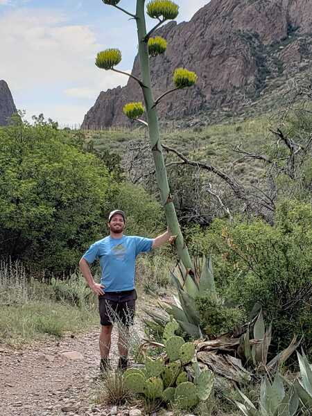

About Me
Hi, I am a reserch associate working on Rubin Observatory commisioning with Dr. Keith Bechtol at University of Wisconsin Madison. Previously, I completed a PhD at Texas A&M University working with Dr. Jennifer Marshall and Dr. Louis Strigari. My research involves using photometric and spectroscopic surveys such as the DECam Local Volume Exploration (DELVE ), the Dark Energy Survey (DES) or the Southern Stellar Stream Spectroscopic Survey (S5) to explore the (sub)structure of the Milky Way Halo. Additionally, I worked as part of the Munnerlyn instrumentation lab developing TCal a mobile spectrophotometric calibration unit for imaging systems to enhance scientific return from large surveys such as the LSST at VRO. I also am extremely interested in spatial statistics, and data vizualization. For more information see the Research section below or my CV
In my free time I play ultimate frisbee, listen to music and figure out how to spend more time in places like Big Bend.
I can be reached at pferguson3 "at" wisc.edu


{kind=link}
{kind=link}